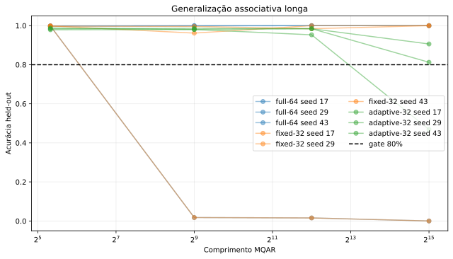
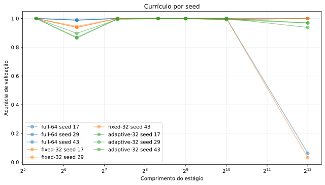
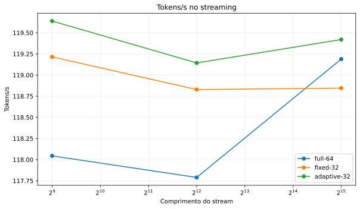
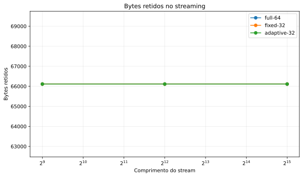
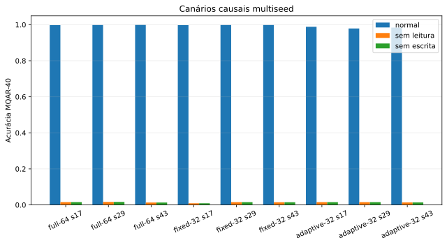
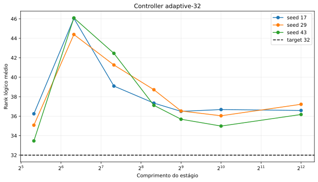

Not promoted. Logical rank did not reduce physical state bytes, and full/fixed seed 29 recorded non-finite 32K failures.
| Arm | Seed | Axis | Length | Failure |
|---|---|---|---|---|
| cm_vr_full64 | 29 | MQAR | 32768 | non-finite cross entropy |
| cm_vr_full64 | 29 | streaming | 32768 | effective_coordinates must contain only finite values at token 14175 |
| cm_vr_fixed32 | 29 | MQAR | 32768 | non-finite cross entropy |
| cm_vr_fixed32 | 29 | streaming | 32768 | effective_coordinates must contain only finite values at token 13951 |





